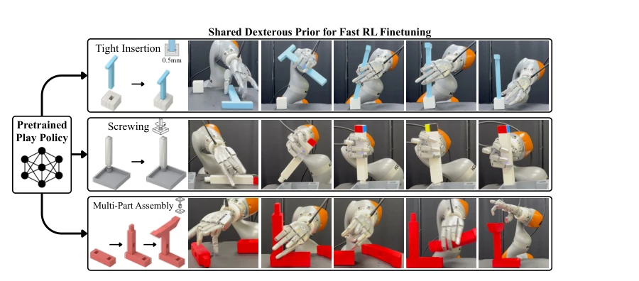
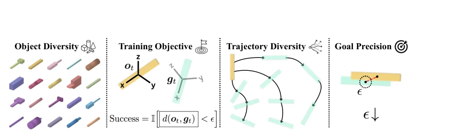
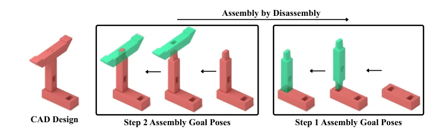
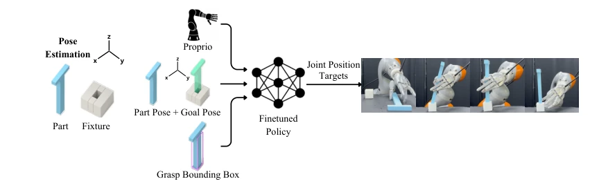
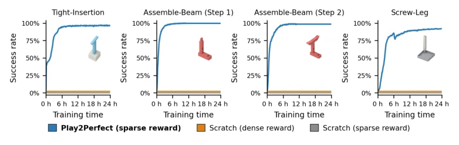
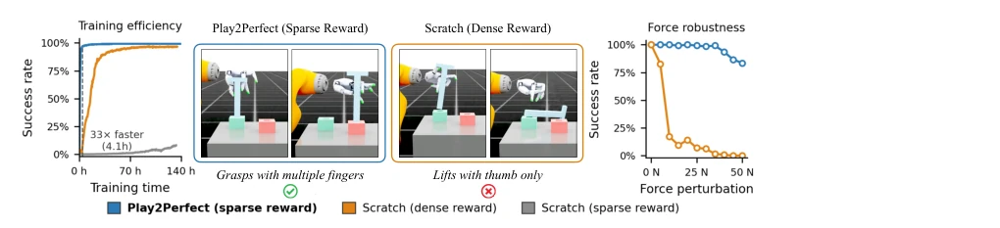
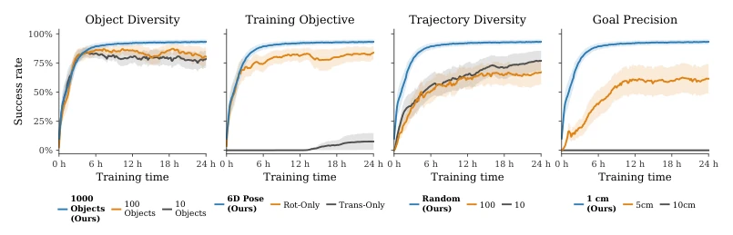
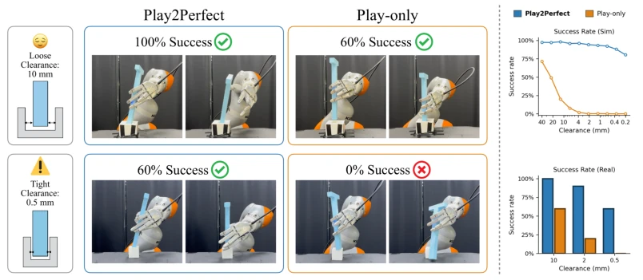
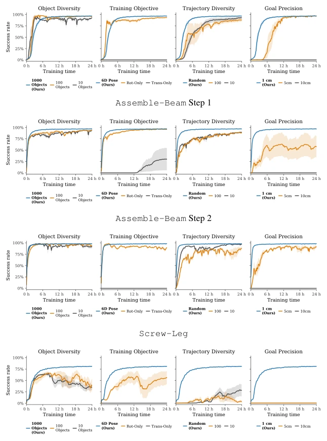
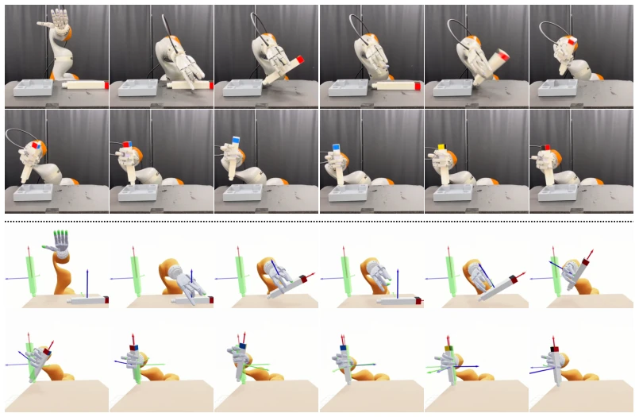

This paper links 'play' and 'assembly', sounding like early education for robots, but the core of Play2Perfect lies in systematically studying which elements of 'play' can transfer to precision assembly. The 33x sample efficiency improvement is indeed impressive, proving the strategy of generalizing first then specializing is effective. However, do not get too excited; it highly relies on CAD models to define rewards and perception. In reality, if parts lack CAD or are occluded, FoundationPose will also fail. Moreover, the Sharpa manipulator is not available to everyone; does this count as a 'Versailles-style' methodology? Additionally, it only solves short-horizon skills; long-horizon tasks still rely on external planning. Overall, it is a breakthrough for contact-intensive tasks, at least proving 'play' is more useful than 'hard training', but there is still a distance from general assembly robots.
Precision assembly is a tough nut to crack for embodied AI. Rich contact makes imitation learning data collection difficult because teleoperation has an embodiment gap and lacks haptic feedback [1-5]. Sparse rewards make reinforcement learning exploration nearly impossible; training from scratch makes it hard to discover sequences from grasping, reorienting to inserting [6-12]. Existing solutions either modify hardware with fixtures [13, 14], modify the manipulator [15, 16], or rely on teleoperation [17, 18]. These all require customization for each task, lacking generalizability. What the authors want to solve is: how to let dexterous hands learn precision assembly without teleoperation and without dense rewards? The key lies in learning 'play' first to accumulate manipulation priors, rather than directly engineering for the task.

Figure 1: Play2Perfect Overview. Before a robot can perfect precise assembly, it first learns to play. We pretrain a single goal-conditioned RL policy on task-agnostic dexterous object manipulation, producing a reusable prior for grasping, in-hand reorientation, and 6D pose control. This pretrained play policy is then finetuned in sparse-reward RL environments derived from CAD designs to solve diverse contact-rich assembly tasks, including tight insertions, screwing, and multi-part assembly.
The framework is divided into two steps: Play Pretraining and RL Finetuning. Step 1 Play Pretraining: Train a goal-conditioned RL policy in simulation, manipulating randomly generated geometries (cubes/cylinders) to random 6D poses, emphasizing finger reorientation within the hand rather than simple arm movement. Design elements include object diversity, trajectory randomness, and target precision, forcing the policy to learn fine control. Step 2 RL Finetuning: Build assembly environment based on CAD design, using 'Assembly-by-Disassembly' to generate sparse contact goals (e.g., pre-insertion poses). Use SAPG algorithm for training, combined with domain randomization to achieve Sim-to-Real. The core innovation lies in transferring free-space manipulation priors to contact-intensive tasks, and forcing the policy to learn fine-tuning through precise target precision, rather than relying on dense rewards.

Figure 2: What matters in dexterous play pretraining? We study the key factors that shape the learned manipulation prior. Our design emphasizes in-hand manipulation with fingers across diverse objects and trajectories, with 6D pose-reaching objectives and precise goal tolerances.

Figure 3: Assembly-by-Disassembly. Given a completed CAD assembly, we generate assembly steps by sequentially removing parts and reversing the disassembly sequence. Each step defines a sparse goal sequence: the final assembled pose and intermediate contact goals, e.g., pre-insert pose.

Figure 9: Inference-Time Pipeline. At deployment, CAD models are reused to estimate the current part pose, compute CAD-derived goal poses relative to the fixture, and define the grasp bounding box. The finetuned policy takes robot proprioception, part pose, goal pose, and the grasp bounding box as input, and outputs joint position targets for the arm and dexterous hand.
Tested on three tasks: Tight-Insertion, Assemble-Beam, Screw-Leg. Baselines include training from scratch with sparse rewards and training from scratch with dense rewards. Play2Perfect converges within 2-5 hours, 33 times faster than training from scratch. Sim-to-Real success rate is 60% for 0.5mm gap insertion, over 50% for multi-part assembly. Ablation studies show that 6D pose goals, object diversity, and high target precision are most critical for downstream task transfer. Play strategy alone cannot complete tight assembly, Finetuning is required. Failures mostly stem from perception occlusion and dynamics mismatch in the final contact phase.

Figure 4: Dexterous Play Pretraining Enables Efficient Downstream Assembly Learning. Across four contact-rich assembly tasks, Play2Perfect rapidly learns successful policies from the shared dexterous prior, reaching high success within 2-5 hours. In contrast, training from scratch fails to make progress with either sparse task rewards or hand-engineered dense rewards.

Figure 5: Dexterous Play Pretraining Induces Robust Assembly Strategies. After simplifying the initialization with an easy-grasp fixture, Scratch (dense reward) can learn the task, but it relies on a brittle strategy that balances the object rather than robustly grasping it. This shortcut fails sharply under external force perturbations. In contrast, Play2Perfect learns a more stable grasping and recovery strategy, maintaining high success across perturbation magnitudes.

Figure 6: What Matters in Pretraining for Downstream Assembly Finetuning? We vary key play pretraining choices and evaluate downstream RL finetuning success averaged across four assembly tasks and three seeds. Pretraining transfers best when it encourages in-hand manipulation via 6D in-hand object control across diverse objects and trajectories with precise goal tolerances.

Figure 7: Assembly Finetuning Enables Tight Insertion. We compare Play2Perfect against a frozen Play-only policy on insertion tasks with varying contact clearance. (Left) Both policies suc- ceed at loose clearance, but only Play2Perfect succeeds at tight clearance. (Top right) Simulation sweeps show that Play2Perfect remains robust as clearance decreases, while Play-only rapidly de- grades. (Bottom right) Real-world success rates show the same trend across different clearances.

Figure 8: Per-task pretraining ablation results. We report the four play pretraining ablations from the main paper on each downstream assembly task. Across tasks, the results support the same conclusion as the averaged curves: pretraining transfers best when it teaches precise 6D in-hand object control across diverse objects and goal trajectories.

Figure 10: Policy Observations During Real-World Deployment. (Top) A representative real- world Screw-Leg rollout, with (Bottom) the corresponding policy observations. The translucent green object and translucent axes denote the active sparse goal pose, while the opaque object and full-opacity axes denote the estimated current part pose observed by the policy. As the rollout progresses, the active goal advances along the screw axis with successive rotational offsets, and the policy tracks these goals by reorienting the leg in-hand. During fast motions, the visualized current pose can lag the real object due to object-pose tracking latency.